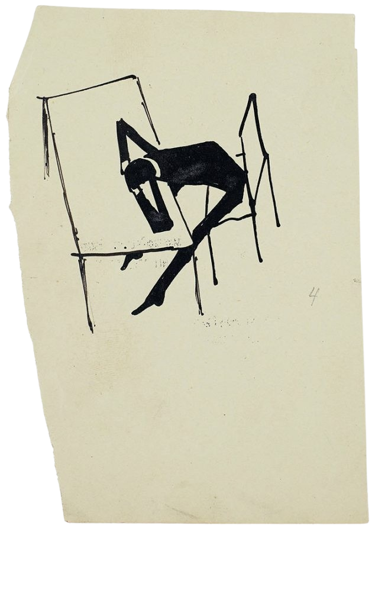

My name is Shay Elkin, and I use he/him pronouns.
I am a software engineer at Confluent, where I work on Kora, our cloud-native fork of Apache Kafka.
You can also find me online on Bluesky, Instagram and LinkedIn. I can be emailed at shay@elkin.io.
Some years ago, working for a different employer, I was part of a team tasked with rewriting a math app to utilize a new framework.
That framework was codenamed Glass, and we followed that theme and gave the app itself the codename Crystal, or Crystal Math in full.
Being far from completion, Crystal couldn't be executed by itself yet, so we wrote a tool to run the parts of the app that were ready, and called that tool Lines.
And so the whole team went crackin' hard doing Lines of Crystal Math.
Or at least we did that until management found out, and demanded we'd find some less exciting codenames.